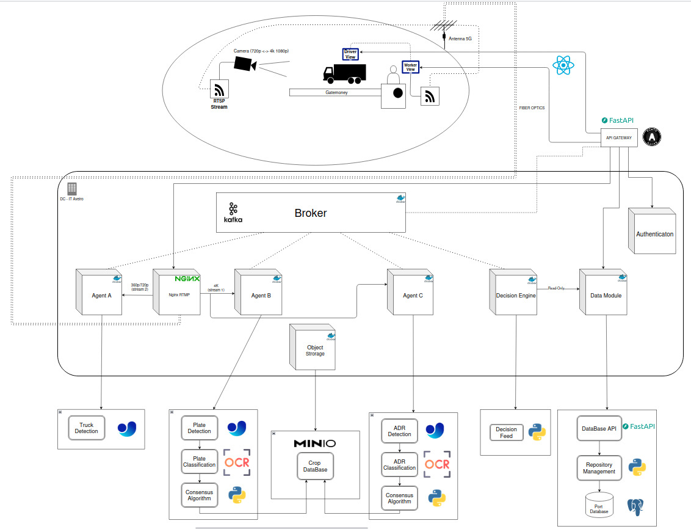
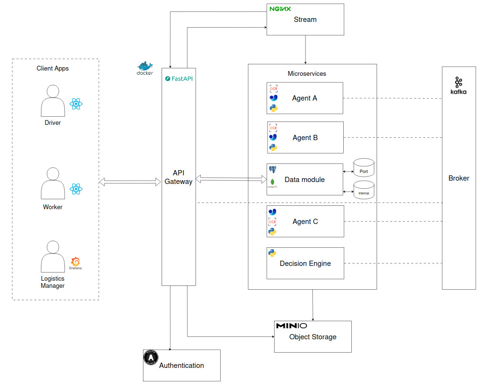
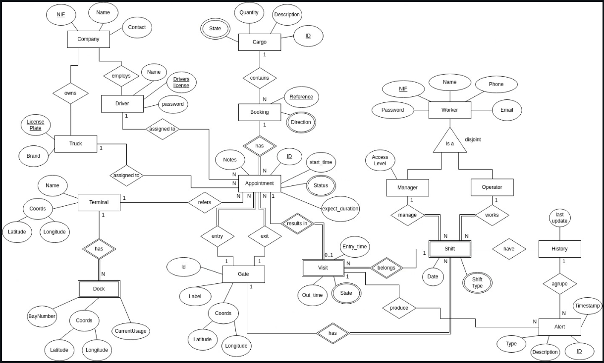
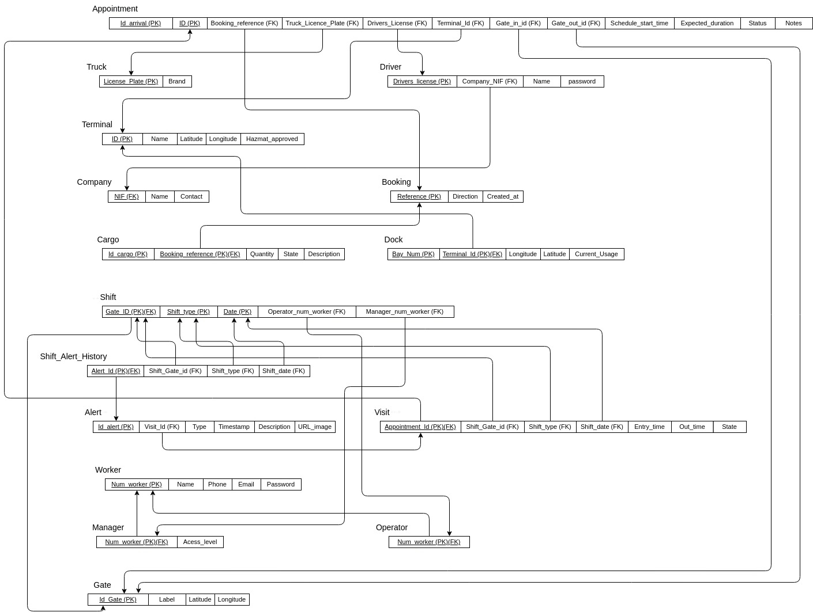

Projeto Intelligent Logistics
Automatização e otimização da logística portuária com Inteligência Artificial
Introdução
Vivemos numa era em que a logística é invisível mas essencial: as nossas encomendas chegam no dia seguinte com apenas um clique, mas por trás desse processo existem milhões de contentores e operações complexas. Só em 2023, estima-se que 858 milhões de contentores passaram por portos marítimos em todo o mundo, movimentados por navios, camiões e infraestruturas terrestres.
Esse volume crescente traz consigo enormes desafios logísticos: atrasos, erros de encaminhamento e custos operacionais. Nos grandes portos — verdadeiros labirintos com dezenas de armazéns — basta uma instrução mal dada para que uma carga seja encaminhada ao destino errado, gerando perdas de tempo e dinheiro.
Motivação
Para aumentar a eficiência e reduzir custos, autoridades portuárias estão a adotar Tecnologias de Informação e Comunicação (TIC) e conceitos da Indústria 4.0. Com a democratização da Inteligência Artificial, da computação em nuvem e da digitalização de processos, surgem soluções inovadoras para tornar a logística mais inteligente, automatizada e sustentável.
O projeto Intelligent Logistics propõe:
- Automatizar o controlo de entrada de camiões num porto
- Detetar veículos e cargas através de câmeras e algoritmos de visão computacional
- Integrar a informação com um sistema logístico inteligente que decide a entrada e destino correto
- Informar o condutor de forma clara, seja por sinalização digital no porto ou aplicações móveis
Concepção do Sistema
O sistema é organizado em dois domínios de aplicação principais:
Domínio de Inteligência Artificial
- Agentes Python especializados em visão computacional (YOLO, OCR)
- Deteção de camiões, reconhecimento de matrículas e símbolos de mercadorias perigosas
- Processamento em tempo real isolado do núcleo operacional
Domínio de Validação e Operações
- Motor de decisão com regras de negócio portuárias
- Gestão de dados e persistência com PostgreSQL, Redis e MongoDB
- Análise estatística e relatórios de operações
Informação Detalhada do Projeto
Visão Geral do Projeto
O Intelligent Logistics é uma plataforma inovadora para automatização e optimização da logística portuária, combinando visão computacional, análise de dados em tempo real e orquestração inteligente para gerir a entrada, encaminhamento e gestão de cargas e veículos.
Objetivos Principais:
- Reduzir tempos de espera e processamento
- Minimizar erros de encaminhamento
- Apoiar decisões operacionais em tempo real
- Disponibilizar dashboards de monitorização
- Aumentar a segurança no manuseamento de cargas perigosas
Este projeto combina IA, visão computacional, logística e eficiência energética, alinhado com os desafios da Indústria 4.0.
Arquitetura do Sistema
O sistema utiliza uma arquitetura modular e event-driven, separando claramente o processamento de inteligência artificial das decisões operacionais. Dois domínios de aplicação isolados comunicam através de fluxos de eventos assíncronos (Apache Kafka), garantindo baixa latência e escalabilidade. Acesso externo é controlado através de gateways dedicados.
Domínio de IA
Agentes Python especializados em deteção, OCR e reconhecimento de símbolos (YOLO, PaddleOCR).
Domínio de Operações
Motor de decisão que aplica regras de negócio e orquestração de processos portuários.
Gateways de Acesso
Interfaces controladas para aplicações móveis, dashboards web e sistemas externos.
Comunicação Assíncrona
Apache Kafka gerencia fluxos de eventos entre domínios, garantindo desacoplamento e confiabilidade.
Component-Level Architecture
Container-Level Architecture
Benefícios da Arquitetura:
- Escalável: Adiciona câmaras e sensores sem impacto global
- Tempo real: Latência < 5s entre captura e notificação
- Integrável: API REST facilmente consumida por sistemas externos
- Segura: Proteção de dados e privacidade garantidas
Base de dados do Sistema
A BD estrutura todo o ciclo de uma visita: um Appointment/Booking liga camião, motorista, empresa e terminal/gates, recebe uma carga, é concretizado como Visit (entrada/saída) num turno (Shift) e pode gerar Alerts associados. Os modelos DER/ER mostram como camiões, motoristas, cargas, agendamentos, turnos e alertas se relacionam para garantir rastreabilidade ponta-a-ponta.
DER
ER
Elementos-chave da BD:
- Appointment/Booking: agendamento com referências de camião, motorista, empresa, terminal e gates (in/out), horário esperado, duração e estado.
- Truck & Driver: matrícula (PK), marca, licença do condutor, empresa (NIF) e credenciais do motorista.
- Cargo & Dock: carga ligada ao booking (quantidade, estado, descrição) e baía com localização (latitude/longitude) e uso atual.
- Visit & Gate: a visita materializa o appointment num gate/turno, registando entrada/saída e estado; os gates têm label e coordenadas.
- Shift: turnos por gate/tipo/data, com operador e gestor responsáveis.
- Alert & History: alertas ligados à visita (tipo, timestamp, descrição, URL de evidência) e histórico por turno/gate para auditoria.
Requisitos Funcionais
- Deteção automática de camiões em tempo real
- Deteção e classificação de matrículas de veículos
- Reconhecimento de símbolos de mercadorias perigosas (ADR)
- Identificação de cargas através da placa de segurança
- Gestão de estados de veículos (entrada, processamento, saída)
- Integração com sistema de gestão logística
- Encaminhamento automático para destino correto
- Notificação ao condutor via sinalização digital/app mobile
- Geração de relatórios estatísticos sobre tráfego e cargas
- Dashboard em tempo real para operadores
Requisitos Não Funcionais
- Desempenho: Tempo de resposta < 5s entre captura e notificação
- Escalabilidade: Suportar múltiplas câmaras e milhares de veículos/dia
- Disponibilidade: SLA de 99% em ambiente de produção
- Confiabilidade: Taxa de precisão > 90% na deteção
- Segurança: Encriptação de dados e controlo de acessos
- Eficiência Energética: Otimização de recursos computacionais
- Manutenibilidade: Arquitetura modular e bem documentada
- Flexibilidade: Capacidade de aprender novos símbolos/tipos de carga
Personas & User Stories
Operador de Cancela
"Como operador, quero ver imediatamente o destino recomendado e estado do veículo para acelerar o processamento de entradas e reduzir filas."
- Interface clara e responsiva
- Alertas para cargas perigosas
- Histórico de veículos processados
Condutor de Camião
"Como condutor, quero receber instruções claras e simples (via sinalização ou app) para chegar rapidamente ao cais correcto sem perder tempo."
- Indicações visuais claras
- Notificações em tempo real
- Interface mobile simples
Gestor Portuário
"Como gestor, quero dashboards com métricas de performance e relatórios detalhados para otimizar operações e tomar decisões informadas."
- Relatórios estatísticos detalhados
- Visualização de tendências
- Alertas de anomalias
User Stories Principais
Frameworks & Tecnologias
Visão Computacional
- YOLOv11 (Deteção de objetos)
- OpenCV
- PaddleOCR (Reconhecimento de texto)
- Algoritmo de Consenso (Multi-frame)
Mensagens & Eventos
- Kafka Broker
- WebSockets para real-time
Front-end Web
- React 19 + TypeScript
- Vite (Build tool)
App MObile
- React + Capacitor
- Leaflet (Mapas)
- HLS.js (Video streaming)
- Android (Android Auto)
Back-end
- Python (FastAPI)
- REST APIs + WebSocket
- Agentes de IA (A, B, C), Motor de Decisão e Módulo de Dados
- Apache Kafka (Message Broker)
- MinIO (Object Storage)
Persistência (Data Module)
- PostgreSQL: Simulação de estrutura de dados portuária (agendamentos, motoristas, cargas, terminais)
- MongoDB: Logs de deteções, eventos de OCR e falhas de reconhecimento
- Redis: Cache de decisões e prevenção de duplicados (idempotência)
Orquestração
- Docker containers
- Kubernetes
- CI/CD pipelines com Jenkins
Integração
- APIs RESTful
- Grafana para visualização de métricas
- Webhooks para notificações
Segurança
- JWT para autenticação
- Rate limiting
Stack Moderno: Todas as tecnologias selecionadas são open-source ou amplamente adotadas na indústria, garantindo manutenibilidade e evolução contínua do sistema.
Mockups & Prototótipos
Mockups de interface e screenshots do dashboard das diferentes personas.

Resultados finais
Resultados finais do dashboard do MVP para o operador de cancela e para os condutores.
Demo MVP
Vídeos de demonstração do MVP do projeto Intelligent Logistics, mostrando as principais funcionalidades implementadas.
Os vídeos demonstram as funcionalidades do MVP, incluindo deteção automática, encaminhamento e notificações em tempo real.
Evoluções Futuras / Trabalho Futuro
Áreas previstas para investigação, prototipagem e desenvolvimento nas próximas fases do projecto:
- Teste em ambiente real: instalação de câmaras num portão para medir latência, precisão e robustez.
- Aprendizagem ativa: permitir actualizações e aprendizagem contínua para novos tipos de carga e símbolos.
- Pipeline MLOps: automação de treino, validação e deploy contínuo dos modelos com métricas e versionamento.
- Privacidade e anonimização: técnicas para conformidade com RGPD (blur/anonimização de rostos e placas onde aplicável).
- Eficiência energética: optimização de consumo em inferência e infraestruturas, equilíbrio performance/consumo.
- Integração com controladores físicos: sinalização digital, APIs e integração com sistemas de terceiros.
- Interface de administração & dashboard: gestão de modelos, visualização de KPIs e workflows operacionais.
- Monitoria avançada: deteção de anomalias, alertas operacionais e relatórios automatizados.
Priorizar iniciativas de baixo risco e métricas objectivas (KPIs sugeridos: latência média, taxa de falsas detecções, tempo médio de processamento, custo energético por inferência).